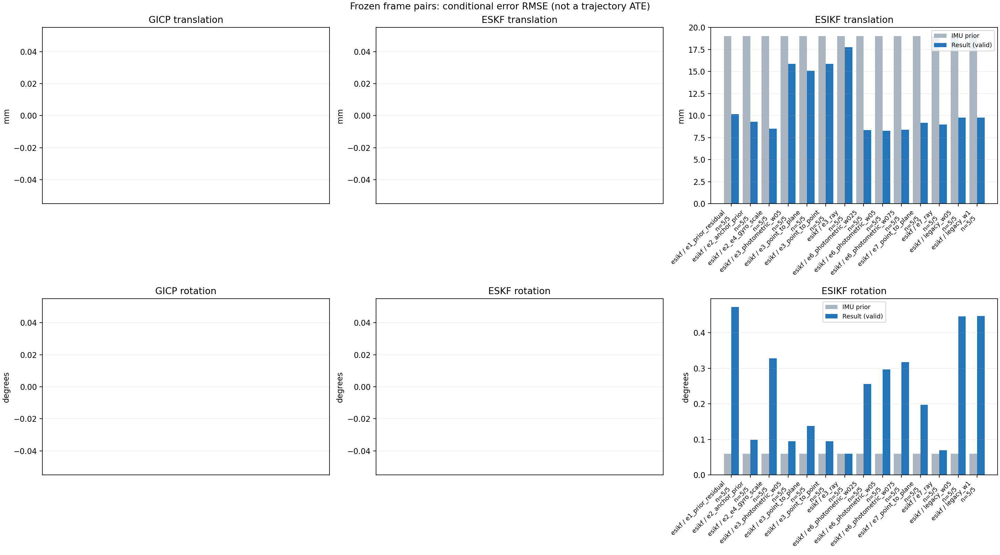

20261015_112940_pitch_up · depth=disparity_cache · cache=a93a044b4524f1912c40
模型视差：/home/ubuntu22/slam/SIO_SLAM/models/tensorrt/disp_896x448_fp16.plan；engine SHA256=604cf6ac1f705c877260711730dd5d2d58c2a21f3020c03c668401ef7fb1e768。输入为生产裁剪与光照处理后的 RGB 0..255；此实验使用原始浮点像素视差，不应用完整前端的邻域视差后处理。
原始 ONNX SHA256：e9f49736a65d68d06681add463866b6defdf78fdd7f4f50f6cc941b682fdc0bc。
代价体图改写验证：ONNX Runtime 固定随机特征输入，最大绝对误差 0；该项检查图改写，完整模型精度仍需由录制数据评估。
配准代码版本：744ac2d993ae629b0cc44a3b1d995e04ab4fad48；观测生成版本：744ac2d993ae629b0cc44a3b1d995e04ab4fad48。
固定图像对与纯 IMU 先验；ESKF 回放固定 GICP 观测，ESIKF 直接读取点云。真值只用于此报告。
同时查看 converged 与 solver_status：上游默认 Stereo 在 max_iter / stopped_at_minimum 时也可能置 converged=true。valid 表示输入检查通过，不表示精度提升。欧氏 GICP 未提供独立的点距 RMSE，该列显示 NaN。
误差按每对图像的锚点计算，单位 m / degrees。此处 RMSE 不是全序列 ATE；末帧受同一锚点条件约束。NIS 与条件马氏距离是诊断量，少量相关图像对不能用于宣称协方差已校准。
全部指标 CSV · R / P / K 矩阵 CSV · Stereo 求解逐轮 CSV · ESIKF 逐轮 CSV · 配置快照 · 矢量图
unflagged 排除纯惯性先验平移误差超过 50 mm 的图像对；whitened 为误差按协方差白化后的每自由度均值，协方差与实际误差相符时约为 1。
| stage | method | variant | valid | total | result_translation_rmse_m | result_rotation_rmse_deg | result_translation_median_m | result_rotation_median_deg | result_translation_rmse_unflagged_m | result_rotation_rmse_unflagged_deg | improved_translation | improved_rotation | posterior_whitened_by_P_rot_mean | posterior_whitened_by_P_trans_mean |
|---|---|---|---|---|---|---|---|---|---|---|---|---|---|---|
| esikf | esikf | e1_prior_residual | 5 | 5 | 0.01016 | 0.47199 | 0.0091398 | 0.36639 | 0.01016 | 0.47199 | 1 | 0 | 347.5 | 110.14 |
| esikf | esikf | e2_anchor_prior | 5 | 5 | 0.0093062 | 0.098328 | 0.0070664 | 0.033776 | 0.0093062 | 0.098328 | 2 | 1 | 181.35 | 294.47 |
| esikf | esikf | e2_e4_gyro_scale | 5 | 5 | 0.0085265 | 0.3275 | 0.0064843 | 0.034482 | 0.0085265 | 0.3275 | 2 | 1 | 233.94 | 252.51 |
| esikf | esikf | e3_photometric_w05 | 5 | 5 | 0.015896 | 0.094703 | 0.0064199 | 0.036 | 0.015896 | 0.094703 | 2 | 1 | 2.5251 | 20.595 |
| esikf | esikf | e3_point_to_plane | 5 | 5 | 0.015096 | 0.13798 | 0.0063861 | 0.026395 | 0.015096 | 0.13798 | 4 | 2 | 2.1184 | 15.545 |
| esikf | esikf | e3_point_to_point | 5 | 5 | 0.015877 | 0.094735 | 0.0064199 | 0.036001 | 0.015877 | 0.094735 | 2 | 1 | 2.5279 | 20.586 |
| esikf | esikf | e3_ray | 5 | 5 | 0.017755 | 0.060041 | 0.0064195 | 0.02831 | 0.017755 | 0.060041 | 2 | 2 | 1.3873 | 15.653 |
| esikf | esikf | e6_photometric_w025 | 5 | 5 | 0.0083556 | 0.25523 | 0.0054629 | 0.026572 | 0.0083556 | 0.25523 | 2 | 1 | 40.058 | 70.468 |
| esikf | esikf | e6_photometric_w05 | 5 | 5 | 0.0083014 | 0.29628 | 0.0055943 | 0.026714 | 0.0083014 | 0.29628 | 2 | 1 | 99.413 | 129.72 |
| esikf | esikf | e6_photometric_w075 | 5 | 5 | 0.0084067 | 0.3168 | 0.0064873 | 0.030323 | 0.0084067 | 0.3168 | 2 | 1 | 166.02 | 189.19 |
| esikf | esikf | e7_point_to_plane | 5 | 5 | 0.0091872 | 0.19697 | 0.0059362 | 0.047874 | 0.0091872 | 0.19697 | 3 | 0 | 16.202 | 31.725 |
| esikf | esikf | e7_ray | 5 | 5 | 0.0090124 | 0.069527 | 0.0076031 | 0.026362 | 0.0090124 | 0.069527 | 1 | 3 | 1.4835 | 34.221 |
| esikf | esikf | legacy_w05 | 5 | 5 | 0.0097758 | 0.44576 | 0.0086163 | 0.34208 | 0.0097758 | 0.44576 | 3 | 0 | 155.9 | 50.471 |
| esikf | esikf | legacy_w1 | 5 | 5 | 0.0097854 | 0.44683 | 0.0086433 | 0.34329 | 0.0097854 | 0.44683 | 3 | 0 | 312.57 | 100.98 |

| stage | case | method | variant | status | solver_status | inliers | converged | covariance_convention | covariance_from_hessian | fitness | registration_rmse_m | prior_trans_error_m | result_trans_error_m | prior_rot_error_deg | result_rot_error_deg | prior_flagged | R_rot_trace_rad2 | R_pos_trace_m2 | nis_regularized | posterior_whitened_by_P_rot | posterior_whitened_by_P_trans |
|---|---|---|---|---|---|---|---|---|---|---|---|---|---|---|---|---|---|---|---|---|---|
| esikf | static_start | esikf | legacy_w1 | updated | converged | 5631 | 1 | 1 | 0 | 0 | 0.00012006 | 0.0040814 | 0.0069246 | 0.4915 | 0 | 4.3249e-07 | 1.0326e-06 | nan | 164.15 | 11.984 | |
| esikf | static_start | esikf | legacy_w05 | updated | converged | 5630 | 1 | 1 | 0 | 0 | 0.00012006 | 0.0040383 | 0.0069246 | 0.49118 | 0 | 8.6491e-07 | 2.0649e-06 | nan | 82.344 | 5.8781 | |
| esikf | static_start | esikf | e1_prior_residual | updated_not_converged | max_iterations | 5762 | 0 | 1 | 0 | 0 | 0.00012006 | 0.00369 | 0.0069246 | 0.53917 | 0 | 4.232e-07 | 9.865e-07 | nan | 195.76 | 9.851 | |
| esikf | static_start | esikf | e2_anchor_prior | updated | converged | 5194 | 1 | 1 | 0 | 0 | 0.00012006 | 0.00018165 | 0.0069246 | 0.018076 | 0 | 4.7278e-07 | 1.106e-06 | nan | 4.1631 | 0.39635 | |
| esikf | static_start | esikf | e2_e4_gyro_scale | updated | converged | 5194 | 1 | 1 | 0 | 0 | 0.00012006 | 0.00018165 | 0.0069246 | 0.01808 | 0 | 4.7278e-07 | 1.106e-06 | nan | 4.163 | 0.39634 | |
| esikf | static_start | esikf | e6_photometric_w075 | updated | converged | 5193 | 1 | 1 | 0 | 0 | 0.00012006 | 0.00015179 | 0.0069246 | 0.015386 | 0 | 6.309e-07 | 1.4767e-06 | nan | 2.9453 | 0.25461 | |
| esikf | static_start | esikf | e6_photometric_w05 | updated | converged | 5193 | 1 | 1 | 0 | 0 | 0.00012006 | 0.00012683 | 0.0069246 | 0.012749 | 0 | 9.4599e-07 | 2.2136e-06 | nan | 1.9482 | 0.17905 | |
| esikf | static_start | esikf | e6_photometric_w025 | updated | converged | 5193 | 1 | 1 | 0 | 0 | 0.00012006 | 0.00010726 | 0.0069246 | 0.0099591 | 0 | 1.8908e-06 | 4.4236e-06 | nan | 1.0987 | 0.15684 | |
| esikf | static_start | esikf | e7_ray | updated | converged | 5193 | 1 | 1 | 0 | 0 | 0.00012006 | 0.00017007 | 0.0069246 | 0.0049934 | 0 | 0.05561 | 4.6404e-05 | nan | 0.23927 | 0.2139 | |
| esikf | static_start | esikf | e7_point_to_plane | updated | converged | 5193 | 1 | 1 | 0 | 0 | 0.00012006 | 7.4536e-05 | 0.0069246 | 0.0097245 | 0 | 1.7996e-06 | 3.6562e-06 | nan | 1.0081 | 0.071162 | |
| esikf | static_start | esikf | e3_point_to_point | updated | converged | 5193 | 1 | 1 | 0 | 0 | 0.00012006 | 0.00011609 | 0.0069246 | 0.0071983 | 0 | 2.5915e-05 | 6.5516e-05 | nan | 0.47944 | 0.19834 | |
| esikf | static_start | esikf | e3_photometric_w05 | updated | converged | 5193 | 1 | 1 | 0 | 0 | 0.00012006 | 0.00011608 | 0.0069246 | 0.0071989 | 0 | 2.5899e-05 | 6.5618e-05 | nan | 0.4795 | 0.19831 | |
| esikf | static_start | esikf | e3_ray | updated | converged | 5193 | 1 | 1 | 0 | 0 | 0.00012006 | 0.00012016 | 0.0069246 | 0.0069075 | 0 | 4.9114 | 0.0040483 | nan | 0.43243 | 0.20586 | |
| esikf | static_start | esikf | e3_point_to_plane | updated | converged | 5193 | 1 | 1 | 0 | 0 | 0.00012006 | 0.00011821 | 0.0069246 | 0.0069562 | 0 | 8.8673e-05 | 0.00011024 | nan | 0.44101 | 0.20049 | |
| esikf | sync_motion | esikf | legacy_w1 | updated | converged | 5900 | 1 | 1 | 0 | 0 | 0.00096706 | 0.0086433 | 0.039675 | 0.34329 | 0 | 4.1807e-07 | 1.0182e-06 | nan | 85.689 | 52.688 | |
| esikf | sync_motion | esikf | legacy_w05 | updated | converged | 5898 | 1 | 1 | 0 | 0 | 0.00096706 | 0.0086163 | 0.039675 | 0.34208 | 0 | 8.3627e-07 | 2.037e-06 | nan | 42.867 | 26.265 | |
| esikf | sync_motion | esikf | e1_prior_residual | updated_not_converged | max_iterations | 5933 | 0 | 1 | 0 | 0 | 0.00096706 | 0.0091398 | 0.039675 | 0.36639 | 0 | 4.1759e-07 | 1.0189e-06 | nan | 100.21 | 58.761 | |
| esikf | sync_motion | esikf | e2_anchor_prior | updated_not_converged | max_iterations | 5577 | 0 | 1 | 0 | 0 | 0.00096706 | 0.0046489 | 0.039675 | 0.035949 | 0 | 4.4171e-07 | 1.0527e-06 | nan | 278.76 | 107.83 | |
| esikf | sync_motion | esikf | e2_e4_gyro_scale | updated_not_converged | max_iterations | 5610 | 0 | 1 | 0 | 0 | 0.00096706 | 0.0044151 | 0.039675 | 0.034482 | 0 | 4.3595e-07 | 1.0496e-06 | nan | 5.3152 | 54.213 | |
| esikf | sync_motion | esikf | e6_photometric_w075 | updated_not_converged | max_iterations | 5592 | 0 | 1 | 0 | 0 | 0.00096706 | 0.0043315 | 0.039675 | 0.030323 | 0 | 5.8464e-07 | 1.4078e-06 | nan | 3.9023 | 42.663 | |
| esikf | sync_motion | esikf | e6_photometric_w05 | updated_not_converged | max_iterations | 5579 | 0 | 1 | 0 | 0 | 0.00096706 | 0.0042846 | 0.039675 | 0.026714 | 0 | 8.7797e-07 | 2.113e-06 | nan | 2.8132 | 30.684 | |
| esikf | sync_motion | esikf | e6_photometric_w025 | updated_not_converged | max_iterations | 5546 | 0 | 1 | 0 | 0 | 0.00096706 | 0.003946 | 0.039675 | 0.026572 | 0 | 1.7691e-06 | 4.2439e-06 | nan | 2.5422 | 15.033 | |
| esikf | sync_motion | esikf | e7_ray | updated | converged | 5457 | 1 | 1 | 0 | 0 | 0.00096706 | 0.0023037 | 0.039675 | 0.039288 | 0 | 0.011557 | 1.4326e-05 | nan | 4.5109 | 4.3783 | |
| esikf | sync_motion | esikf | e7_point_to_plane | updated | converged | 5475 | 1 | 1 | 0 | 0 | 0.00096706 | 0.0013366 | 0.039675 | 0.047874 | 0 | 1.8317e-06 | 3.7325e-06 | nan | 7.605 | 2.3262 | |
| esikf | sync_motion | esikf | e3_point_to_point | updated | converged | 5482 | 1 | 1 | 0 | 0 | 0.00096706 | 0.0012594 | 0.039675 | 0.036968 | 0 | 2.4723e-05 | 6.4752e-05 | nan | 4.1488 | 0.38226 | |
| esikf | sync_motion | esikf | e3_photometric_w05 | updated | converged | 5481 | 1 | 1 | 0 | 0 | 0.00096706 | 0.0012586 | 0.039675 | 0.036973 | 0 | 2.4707e-05 | 6.4843e-05 | nan | 4.1499 | 0.38184 | |
| esikf | sync_motion | esikf | e3_ray | updated | converged | 5513 | 1 | 1 | 0 | 0 | 0.00096706 | 0.00089648 | 0.039675 | 0.039677 | 0 | 0.97903 | 0.0013353 | nan | 4.5173 | 0.24423 | |
| esikf | sync_motion | esikf | e3_point_to_plane | updated | converged | 5488 | 1 | 1 | 0 | 0 | 0.00096706 | 0.00096284 | 0.039675 | 0.038779 | 0 | 9.0062e-05 | 0.00011309 | nan | 4.3672 | 0.22296 | |
| esikf | main_motion | esikf | legacy_w1 | updated | converged | 18077 | 1 | 1 | 0 | 0 | 0.0064081 | 0.0061313 | 0.02833 | 0.11305 | 0 | 1.3357e-07 | 8.6818e-07 | nan | 35.517 | 42.494 | |
| esikf | main_motion | esikf | legacy_w05 | updated | converged | 18077 | 1 | 1 | 0 | 0 | 0.0064081 | 0.006149 | 0.02833 | 0.11341 | 0 | 2.6708e-07 | 1.7365e-06 | nan | 17.899 | 21.389 | |
| esikf | main_motion | esikf | e1_prior_residual | updated_not_converged | max_iterations | 18054 | 0 | 1 | 0 | 0 | 0.0064081 | 0.0065866 | 0.02833 | 0.25405 | 0 | 1.3238e-07 | 8.7265e-07 | nan | 165.89 | 52.546 | |
| esikf | main_motion | esikf | e2_anchor_prior | updated | converged | 18075 | 1 | 1 | 0 | 0 | 0.0064081 | 0.0070664 | 0.02833 | 0.033776 | 0 | 1.3373e-07 | 8.7339e-07 | nan | 241.12 | 121.78 | |
| esikf | main_motion | esikf | e2_e4_gyro_scale | updated | converged | 18038 | 1 | 1 | 0 | 0 | 0.0064081 | 0.0064843 | 0.02833 | 0.14491 | 0 | 1.329e-07 | 8.7008e-07 | nan | 77.823 | 79.715 | |
| esikf | main_motion | esikf | e6_photometric_w075 | updated | converged | 18029 | 1 | 1 | 0 | 0 | 0.0064081 | 0.0064873 | 0.02833 | 0.13123 | 0 | 1.7755e-07 | 1.1645e-06 | nan | 52.028 | 67.854 | |
| esikf | main_motion | esikf | e6_photometric_w05 | updated | converged | 18039 | 1 | 1 | 0 | 0 | 0.0064081 | 0.0065046 | 0.02833 | 0.11876 | 0 | 2.6591e-07 | 1.7425e-06 | nan | 33.062 | 56.573 | |
| esikf | main_motion | esikf | e6_photometric_w025 | updated | converged | 18082 | 1 | 1 | 0 | 0 | 0.0064081 | 0.0064612 | 0.02833 | 0.085238 | 0 | 5.3208e-07 | 3.4632e-06 | nan | 12.377 | 44.419 | |
| esikf | main_motion | esikf | e7_ray | updated | converged | 18030 | 1 | 1 | 0 | 0 | 0.0064081 | 0.0076031 | 0.02833 | 0.026362 | 0 | 0.01029 | 1.8312e-05 | nan | 0.37332 | 70.911 | |
| esikf | main_motion | esikf | e7_point_to_plane | updated | converged | 17943 | 1 | 1 | 0 | 0 | 0.0064081 | 0.0059362 | 0.02833 | 0.11446 | 0 | 8.6373e-07 | 3.6467e-06 | nan | 12.552 | 43.484 | |
| esikf | main_motion | esikf | e3_point_to_point | updated | converged | 18098 | 1 | 1 | 0 | 0 | 0.0064081 | 0.0064199 | 0.02833 | 0.036001 | 0 | 7.2993e-06 | 5.1061e-05 | nan | 0.99216 | 31.117 | |
| esikf | main_motion | esikf | e3_photometric_w05 | updated | converged | 18098 | 1 | 1 | 0 | 0 | 0.0064081 | 0.0064199 | 0.02833 | 0.036 | 0 | 7.295e-06 | 5.1141e-05 | nan | 0.99228 | 31.115 | |
| esikf | main_motion | esikf | e3_ray | updated | converged | 18097 | 1 | 1 | 0 | 0 | 0.0064081 | 0.0064195 | 0.02833 | 0.02831 | 0 | 0.92924 | 0.0015254 | nan | 0.43036 | 29.763 | |
| esikf | main_motion | esikf | e3_point_to_plane | updated | converged | 18097 | 1 | 1 | 0 | 0 | 0.0064081 | 0.0063861 | 0.02833 | 0.026395 | 0 | 4.2229e-05 | 0.00010624 | nan | 0.40033 | 30.077 | |
| esikf | main_motion_long | esikf | legacy_w1 | updated_not_converged | max_iterations | 16860 | 0 | 1 | 0 | 0 | 0.038923 | 0.010103 | 0.12422 | 0.79111 | 0 | 1.0137e-07 | 9.4607e-07 | nan | 1274.7 | 106.79 | |
| esikf | main_motion_long | esikf | legacy_w05 | updated_not_converged | max_iterations | 16860 | 0 | 1 | 0 | 0 | 0.038923 | 0.01009 | 0.12422 | 0.78875 | 0 | 2.0261e-07 | 1.8891e-06 | nan | 634.99 | 53.343 | |
| esikf | main_motion_long | esikf | e1_prior_residual | updated_not_converged | max_iterations | 16857 | 0 | 1 | 0 | 0 | 0.038923 | 0.010088 | 0.12422 | 0.78992 | 0 | 1.0143e-07 | 9.4836e-07 | nan | 1272.2 | 106.46 | |
| esikf | main_motion_long | esikf | e2_anchor_prior | updated_not_converged | max_iterations | 16909 | 0 | 1 | 0 | 0 | 0.038923 | 0.010553 | 0.12422 | 0.21348 | 0 | 9.9963e-08 | 9.4793e-07 | nan | 380.89 | 172.41 | |
| esikf | main_motion_long | esikf | e2_e4_gyro_scale | updated_not_converged | max_iterations | 16835 | 0 | 1 | 0 | 0 | 0.038923 | 0.0072005 | 0.12422 | 0.71678 | 0 | 1.0131e-07 | 9.4326e-07 | nan | 1080.6 | 58.328 | |
| esikf | main_motion_long | esikf | e6_photometric_w075 | updated_not_converged | max_iterations | 16850 | 0 | 1 | 0 | 0 | 0.038923 | 0.0066805 | 0.12422 | 0.69529 | 0 | 1.3498e-07 | 1.2595e-06 | nan | 769.52 | 39.134 | |
| esikf | main_motion_long | esikf | e6_photometric_w05 | updated_not_converged | max_iterations | 16868 | 0 | 1 | 0 | 0 | 0.038923 | 0.0055943 | 0.12422 | 0.6511 | 0 | 2.0244e-07 | 1.8954e-06 | nan | 457.48 | 19.271 | |
| esikf | main_motion_long | esikf | e6_photometric_w025 | updated_not_converged | max_iterations | 16903 | 0 | 1 | 0 | 0 | 0.038923 | 0.0054629 | 0.12422 | 0.56358 | 0 | 4.0173e-07 | 3.718e-06 | nan | 182.48 | 8.6049 | |
| esikf | main_motion_long | esikf | e7_ray | updated_not_converged | max_iterations | 16770 | 0 | 1 | 0 | 0 | 0.038923 | 0.0083401 | 0.12422 | 0.14798 | 0 | 0.012 | 2.6598e-05 | nan | 0.31923 | 13.359 | |
| esikf | main_motion_long | esikf | e7_point_to_plane | updated_not_converged | max_iterations | 17067 | 0 | 1 | 0 | 0 | 0.038923 | 0.010047 | 0.12422 | 0.42247 | 0 | 8.2387e-07 | 3.8893e-06 | nan | 57.672 | 24.42 | |
| esikf | main_motion_long | esikf | e3_point_to_point | updated_not_converged | max_iterations | 17009 | 0 | 1 | 0 | 0 | 0.038923 | 0.030825 | 0.12422 | 0.20531 | 0 | 5.6541e-06 | 6.1283e-05 | nan | 5.4781 | 34.243 | |
| esikf | main_motion_long | esikf | e3_photometric_w05 | updated_not_converged | max_iterations | 17011 | 0 | 1 | 0 | 0 | 0.038923 | 0.030874 | 0.12422 | 0.20524 | 0 | 5.6496e-06 | 6.1357e-05 | nan | 5.463 | 34.325 | |
| esikf | main_motion_long | esikf | e3_ray | updated | converged | 17067 | 1 | 1 | 0 | 0 | 0.038923 | 0.035662 | 0.12422 | 0.12488 | 0 | 0.42508 | 0.0021111 | nan | 0.22008 | 28.107 | |
| esikf | main_motion_long | esikf | e3_point_to_plane | updated_not_converged | max_iterations | 17061 | 0 | 1 | 0 | 0 | 0.038923 | 0.028799 | 0.12422 | 0.30484 | 0 | 4.0673e-05 | 0.00011891 | nan | 4.0071 | 25.884 | |
| esikf | static_end | esikf | legacy_w1 | updated | converged | 21273 | 1 | 1 | 0 | 0 | 0.01604 | 0.01574 | 0.0024326 | 0.015366 | 0 | 7.5652e-08 | 7.4326e-07 | nan | 2.8158 | 290.95 | |
| esikf | static_end | esikf | legacy_w05 | updated | converged | 21273 | 1 | 1 | 0 | 0 | 0.01604 | 0.015737 | 0.0024326 | 0.015362 | 0 | 1.5125e-07 | 1.4859e-06 | nan | 1.4067 | 145.48 | |
| esikf | static_end | esikf | e1_prior_residual | updated | converged | 21276 | 1 | 1 | 0 | 0 | 0.01604 | 0.016549 | 0.0024326 | 0.019689 | 0 | 7.5572e-08 | 7.4159e-07 | nan | 3.4545 | 323.07 | |
| esikf | static_end | esikf | e2_anchor_prior | updated | converged | 21284 | 1 | 1 | 0 | 0 | 0.01604 | 0.015814 | 0.0024326 | 0.0025962 | 0 | 7.5623e-08 | 7.425e-07 | nan | 1.822 | 1069.9 | |
| esikf | static_end | esikf | e2_e4_gyro_scale | updated | converged | 21284 | 1 | 1 | 0 | 0 | 0.01604 | 0.015814 | 0.0024326 | 0.0025963 | 0 | 7.5623e-08 | 7.425e-07 | nan | 1.8202 | 1069.9 | |
| esikf | static_end | esikf | e6_photometric_w075 | updated | converged | 21297 | 1 | 1 | 0 | 0 | 0.01604 | 0.015744 | 0.0024326 | 0.0025248 | 0 | 1.007e-07 | 9.8755e-07 | nan | 1.7275 | 796.07 | |
| esikf | static_end | esikf | e6_photometric_w05 | updated | converged | 21282 | 1 | 1 | 0 | 0 | 0.01604 | 0.015893 | 0.0024326 | 0.0025536 | 0 | 1.5097e-07 | 1.4803e-06 | nan | 1.7568 | 541.9 | |
| esikf | static_end | esikf | e6_photometric_w025 | updated | converged | 21286 | 1 | 1 | 0 | 0 | 0.01604 | 0.016184 | 0.0024326 | 0.0025954 | 0 | 3.0187e-07 | 2.9619e-06 | nan | 1.7934 | 284.13 | |
| esikf | static_end | esikf | e7_ray | updated | converged | 21287 | 1 | 1 | 0 | 0 | 0.01604 | 0.016535 | 0.0024326 | 0.0028831 | 0 | 0.024817 | 4.5477e-05 | nan | 1.9749 | 82.241 | |
| esikf | static_end | esikf | e7_point_to_plane | updated | converged | 21301 | 1 | 1 | 0 | 0 | 0.01604 | 0.016853 | 0.0024326 | 0.0030303 | 0 | 4.5012e-07 | 3.5842e-06 | nan | 2.1716 | 88.324 | |
| esikf | static_end | esikf | e3_point_to_point | updated | converged | 21273 | 1 | 1 | 0 | 0 | 0.01604 | 0.016353 | 0.0024326 | 0.0025456 | 0 | 4.142e-06 | 4.3961e-05 | nan | 1.5412 | 36.99 | |
| esikf | static_end | esikf | e3_photometric_w05 | updated | converged | 21273 | 1 | 1 | 0 | 0 | 0.01604 | 0.016352 | 0.0024326 | 0.0025453 | 0 | 4.1396e-06 | 4.4032e-05 | nan | 1.5407 | 36.954 | |
| esikf | static_end | esikf | e3_ray | updated | converged | 21266 | 1 | 1 | 0 | 0 | 0.01604 | 0.016199 | 0.0024326 | 0.0024932 | 0 | 2.185 | 0.0042588 | nan | 1.3366 | 19.943 | |
| esikf | static_end | esikf | e3_point_to_plane | updated | converged | 21278 | 1 | 1 | 0 | 0 | 0.01604 | 0.016381 | 0.0024326 | 0.0025769 | 0 | 2.2135e-05 | 0.00010763 | nan | 1.3765 | 21.339 |